Processamentos da integração
Todo processo de integração pode ser automatizado e por esse motivo, e para isso pode ser usado o Agendador de Tarefas do Windows.
Veremos como criar esse agendamento no decorrer deste manual. Está integração é realizada através dos processamentos específicos
acessados através da tela principal e estão disponíveis nos módulos Faturamento, Integração de Sistemas e BI – Inteligência de Negócios.
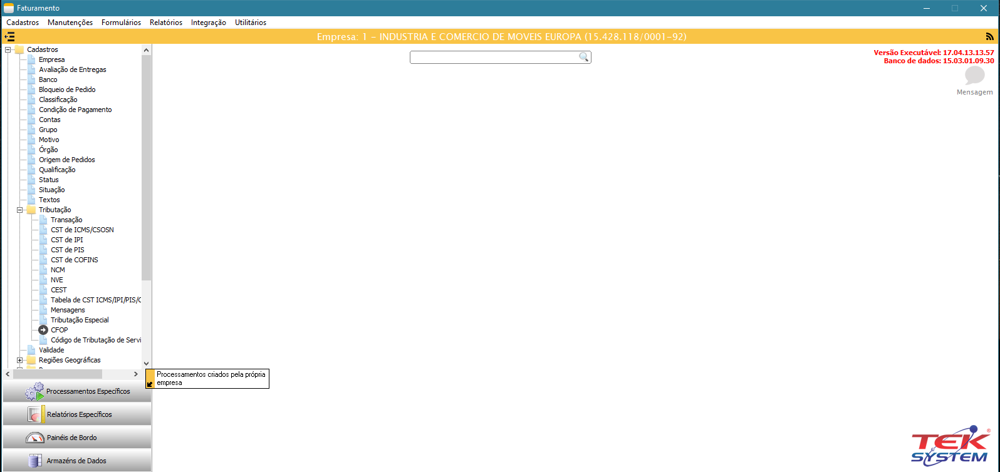
Inicializando as parametrizações(TEK-> MADEIRA MADEIRA: INICIALIZAÇÃO)
O 1º processamento específico que devemos executar é o TEK-> MADEIRA MADEIRA: INICIALIZAÇÃO. Este processamento irá criar uma unidade de
codificação com todos os parâmetros necessários para integração.
Obs.: Todos os processamentos possuem observações importantes que devem ter uma atenção especial.
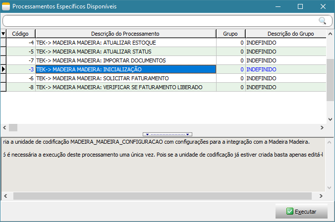
Ao executar este processamento, será exibido a tela abaixo onde deve ser parametrizado usando todas as configurações realizadas acima. Após executa-la,
será criado uma unidade de codificação(unit) chamada MADEIRA_MADEIRA_CONFIGURACAO, está unit não deve ser alterada, pois todo processo de integração
depende dela. Nesta mesma unit possui alguns exemplos de como agendar os processamentos no Agendador de Tarefas do Windows.
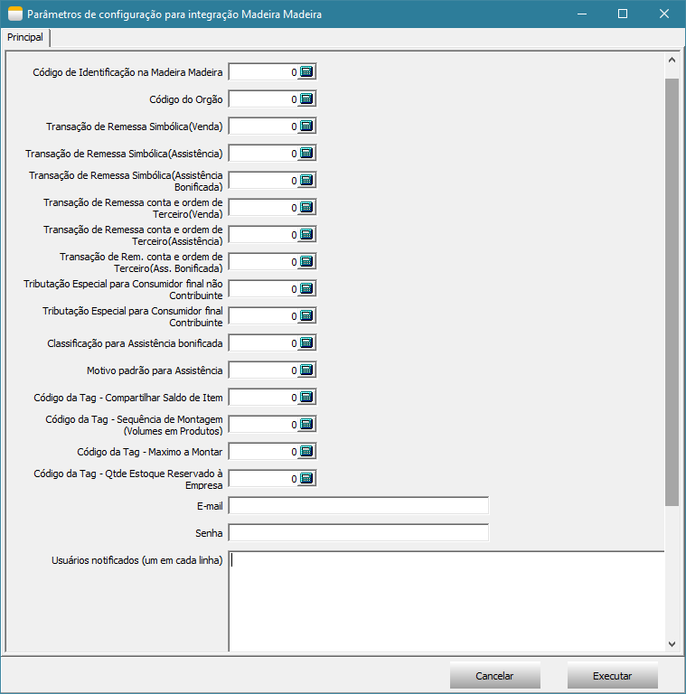
Atualizando o saldo do item(TEK-> MADEIRA MADEIRA: ATUALIZAR ESTOQUE)
O processamento TEK-> MADEIRA MADEIRA: ATUALIZAR ESTOQUE irá atualizar o saldo do item no site. Ao executa-lo será exibido uma tela com filtros e em seguida
será executado o processo. A atualização do saldo do item irá depender da forma de trabalho da empresa, caso a empresa controle estoque de volume, será utilizado
o relatório de Montagem x Sobras, caso não controle estoque de volume e sim do produto, será utilizando o saldo gravado no detalhamento do item.
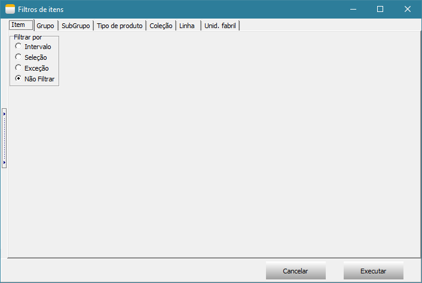
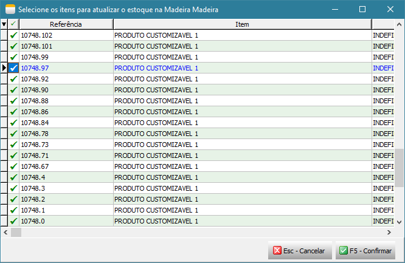
Atualizando o status do item(TEK-> MADEIRA MADEIRA: ATUALIZAR STATUS)
O processamento TEK-> MADEIRA MADEIRA: ATUALIZAR STATUS irá atualizar o status dos itens no site, este processo considera apenas os itens que tiverem alterações no dia.
Ao executa-lo será exibido uma tela com filtros e em seguida será executado o processo.
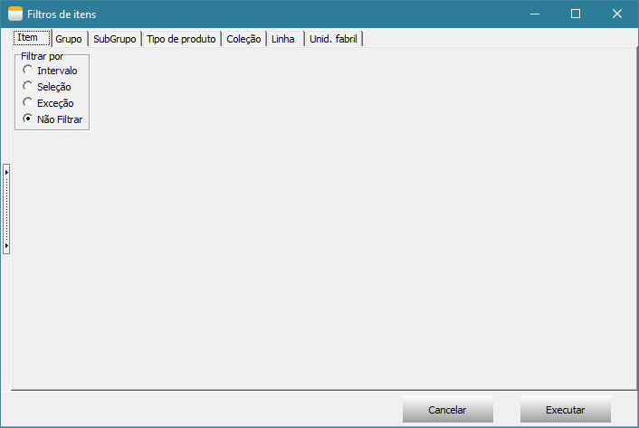
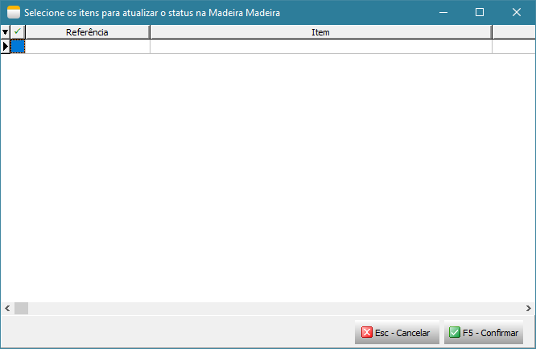
Importação de pedido de venda/assistência técnica(TEK-> MADEIRA MADEIRA: IMPORTAR DOCUMENTOS)
O processamento TEK-> MADEIRA MADEIRA: IMPORTAR DOCUMENTOS irá atualizar o status dos itens no site, este processo considera apenas os itens que tiverem alterações no dia. Ao executa-lo será exibido uma tela para selecionar todos os documentos que deseja importar, após importar os documentos, não será possível importar o mesmo documento novamente.
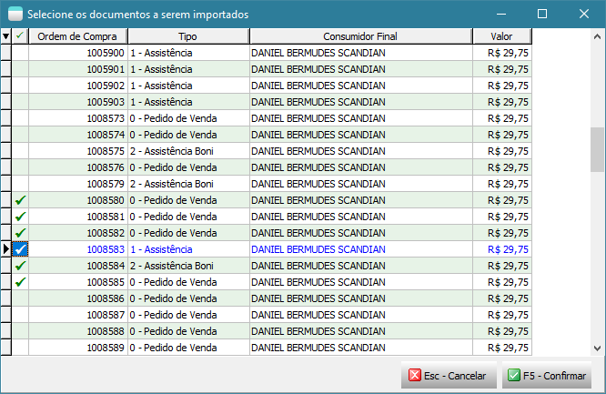
Após importação é exibido um detalhamento do que foi importado e também é gravado um arquivo texto no documento com todas as informações importadas da MadeiraMadeira.

Após importação segue o fluxo de conferência do documento, formação de carga e reserva.
Solicitar autorização de Faturamento à MadeiraMadeira(TEK-> MADEIRA MADEIRA: SOLICITAR FATURAMENTO)
O processamento TEK-> MADEIRA MADEIRA: SOLICITAR FATURAMENTO irá solicitar à MadeiraMadeira a autorização para emissão das notas fiscais(remessa e simbólica).
Somente serão autorizados documentos que estiverem em carga e que estejam totalmente reservados. São essas operações que irão garantir que o item possui
estoque e está pronto para dar andamento na entrega da mercadoria. Ao executa-lo será exibido uma tela com filtros de documentos e em seguida será executado
o processo.
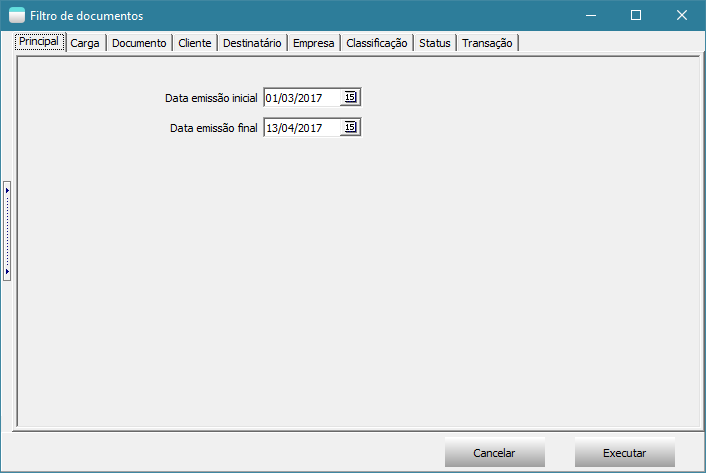
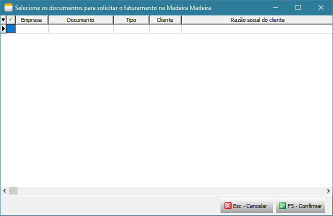
Verificar se o faturamento foi liberado pela MadeiraMadeira(TEK-> MADEIRA MADEIRA: VERIFICAR SE FATURAMENTO LIBERADO)
O processamento TEK-> MADEIRA MADEIRA: VERIFICAR SE FATURAMENTO LIBERADO irá monitorar o webservice da MadeiraMadeira aguardando a emissão da nota fiscal
de venda ao consumidor final pela MadeiraMadeira, caso a nota fiscal esteja liberada será feito a importação da nota fiscal emitida pela MadeiraMadeira
para o consumidor final e irá atualizar os dados do transportador inserindo-o na carga, atualizar o valor unitário e valor total dos itens para destinatário
final no documento(pedido/assistência), importar o transportador redespacho e inclui-lo nas observações para nota fiscal de venda à ordem no
documento(pedido/assistência), atualizar os dados do destinatário final e inserir no documento da carga o número, modelo, série, data de emissão e chave
da nota fiscal. Ao executa-lo será exibido uma tela com filtros de documentos e em seguida será executado o processo.
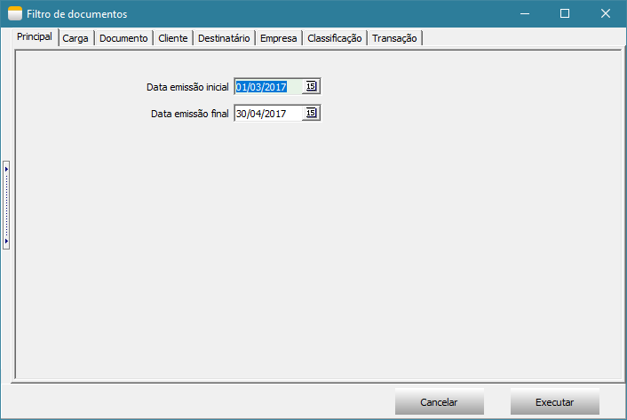
Após importação de todos os dados da nota fiscal, é exibido uma tela com detalhamento do que foi importado e também é gravado um arquivo texto no documento com todas as informações importadas da MadeiraMadeira.
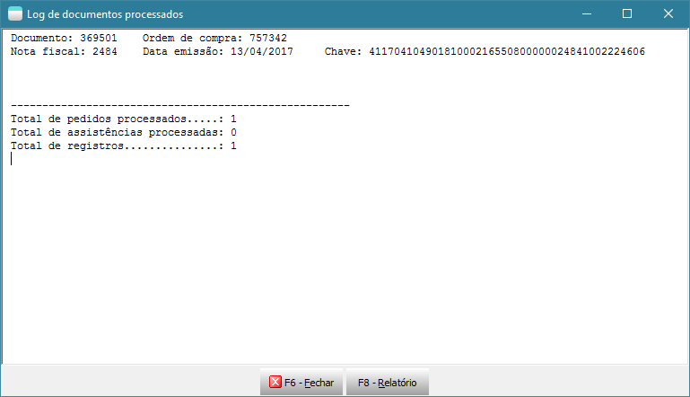
Emitindo nota fiscal(TEK-> MADEIRA MADEIRA: EMITIR NFE)
O processamento TEK-> MADEIRA MADEIRA: EMITIR NFE irá emitir as notas fiscais de remessa e simbólica somente dos documentos que o faturamento foi liberado
através do processamento TEK-> MADEIRA MADEIRA: VERIFICAR SE FATURAMENTO LIBERADO. Ao executar será exibido uma tela com filtros de documentos e em seguida
será executado o processo.
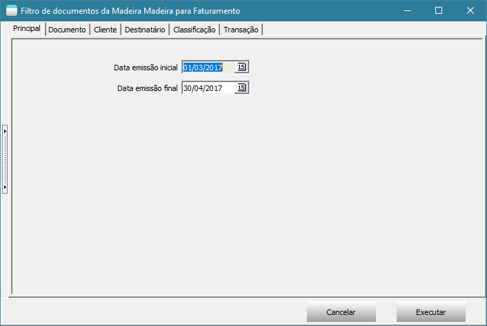
Enviando notas fiscais para MadeiraMadeira(TEK-> MADEIRA MADEIRA: COMPARTILHAR NFE)
O processamento TEK-> MADEIRA MADEIRA: COMPARTILHAR NFE irá enviar o XML das notas fiscais de remessa e simbólica para MadeiraMadeira. Somente será enviado
otas fiscais faturadas. Ao executar será exibido uma tela com filtros de documentos e em seguida será executado o processo.

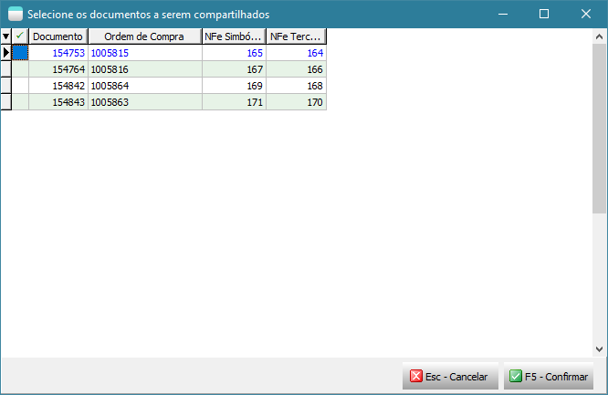
Agendamento dos processos no Agendador de Tarefas do Windows
Importante: Levante um TekServer somente para execução destes processamentos. Este TekServer deve ser 32 bits.
Para realizar o agendamento dos processos no Agendador de Tarefas do Windows, acesse Painel de Controle -> Ferramentas Administrativas -> Agendador de Tarefas.
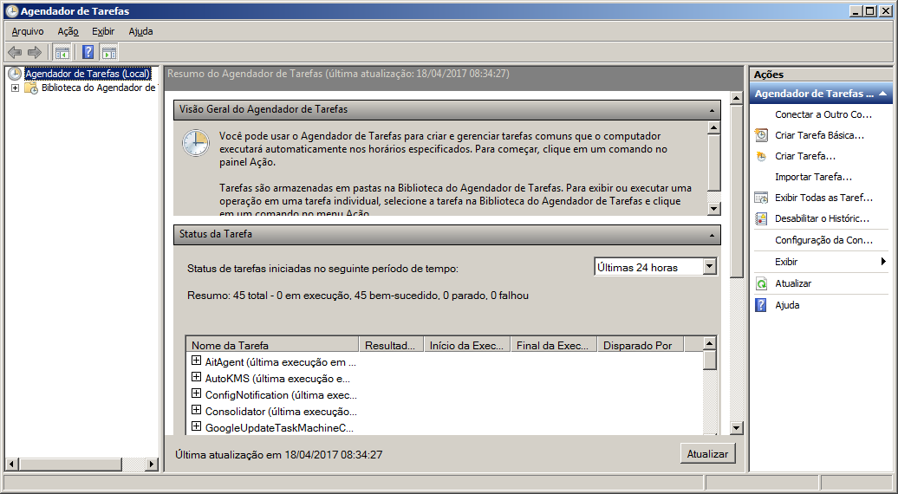
Selecione Biblioteca do Agendador de Tarefas e clique em Nova Pasta para criar uma pasta chamada Tek-System.

Em seguida selecione a pasta Tek-System e clique em Criar Tarefa...
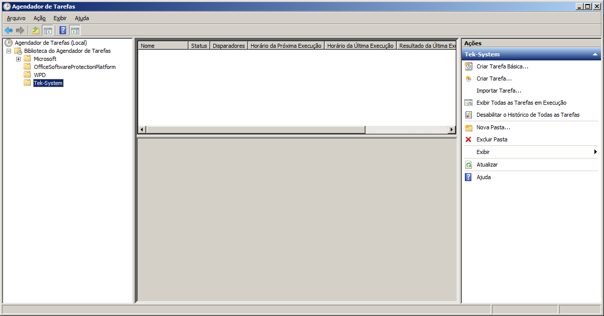
Na tela “Criar Tarefa” deve seguir um padrão para o nome conforme exemplo abaixo.
Exemplo: Madeira Madeira: Atualizar estoque.
Defina o intervalo de execução do agendamento na guia Disparadores junto com o responsável pelo servidor da empresa.

Na guia Ações clique em Novo para informar o script a ser executado neste agendamento. Ao clicar em Novo será aberto a tela abaixo.
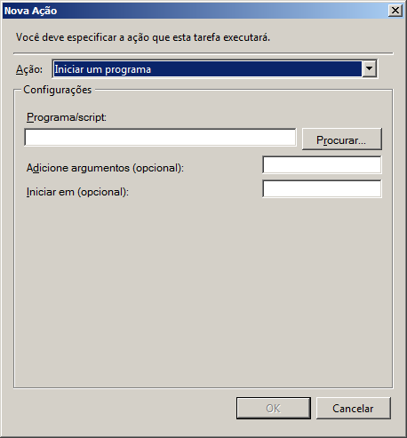
No campo Programa/Script adicione o script para agendamento conforme descrito abaixo. A execução do processamento é realizada pelo módulo ExecMetodoInterpERP.exe, para executar as funções abaixo é necessário preencher alguns parâmetros, são:
- -U: Nome do usuário que irá executar o processamento. O ideal é criar um usuário específico para isso;
- -S: Senha do usuário;
- -P: Porta de conexão com o TekServer;
- -E: Código da empresa;
- -M: Nome do método a ser executado.
Confira se o módulo ExecMetodoInterpERP.exe está no diretório “C:\tek-system\execmc\”. Este módulo fica localizado no diretório dos executáveis do sistema.
Importante: Antes de criar o agendamento para cada script abaixo, faça um teste de execução através do prompt de comando. Para testar a funcionamento do script, copie e cole-o no prompt de comando e tecle Enter para ver o resultado.
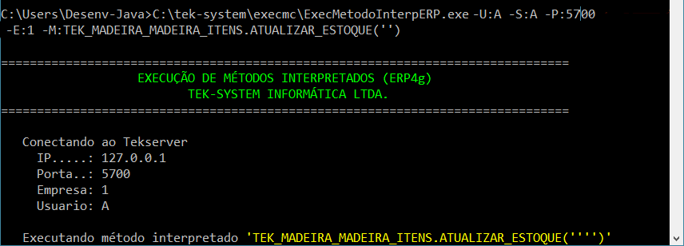
Abaixo contém todos os script para cada processamento.
- Automatizar a atualização de saldos:
C:\tek-system\execmc\ExecMetodoInterpERP.exe -U:NOME_USUARIO -S:SENHA -P:5700 -E:1 -M:TEK_MADEIRA_MADEIRA_ITENS.ATUALIZAR_ESTOQUE('')
- Automatizar a atualização de status de itens:
C:\tek-system\execmc\ExecMetodoInterpERP.exe -U:NOME_USUARIO -S:SENHA -P:5700 -E:1 -M:TEK_MADEIRA_MADEIRA_ITENS.ATUALIZAR_STATUS('')
- Automatizar a importação de pedidos do site:
C:\tek-system\execmc\ExecMetodoInterpERP.exe -U:NOME_USUARIO -S:SENHA -P:5700 -E:1 -M:TEK_MADEIRA_MADEIRA_DOCUMENTOS.IMPORTAR
- Automatizar aviso de venda à ordem pronta para faturamento:
C:\tek-system\execmc\ExecMetodoInterpERP.exe -U:NOME_USUARIO -S:SENHA -P:5700 -E:1 -M:TEK_MADEIRA_MADEIRA_VENDA_A_ORDEM.SOLICITAR_FATURAMENTO('')
- Automatizar monitoramento de faturamento liberado pela MadeiraMadeira:
C:\tek-system\execmc\ExecMetodoInterpERP.exe -U:NOME_USUARIO -S:SENHA -P:5700 -E:1 -M:TEK_MADEIRA_MADEIRA_VENDA_A_ORDEM.VERIFICAR_SE_FATURAMENTO_LIBERADO('')
- Automatizar faturamento de venda à ordem:
C:\tek-system\execmc\ExecMetodoInterpERP.exe -U:NOME_USUARIO -S:SENHA -P:5700 -E:1 -M:TEK_MADEIRA_MADEIRA_EMISSAO_NFE.FATURAR
- Compartilhar Notas Fiscais com WebService
C:\tek-system\execmc\ExecMetodoInterpERP.exe -U:NOME_USUARIO -S:SENHA -P:5700 -E:1 -M:TEK_MADEIRA_MADEIRA_COMPARTILHAR_NFE.COMPARTILHAR
Indicadores
É disponibilizado 3 indicadores padrões para auxiliar na integração com MadeiraMadeira, são:
- MADEIRA MADEIRA: QTDE DOC. SEM PEDIDO DE AUTORIZAÇÃO P/ FAT: Apresenta a quantidade de documentos importados que não estão em carga e/ou não foram
totalmente reservados; - MADEIRA MADEIRA: QTDE DOC. AGUARDANDO AUTORIZAÇÃO P/ FAT: Apresenta a quantidade de documentos que já estão em carga totalmente reservados aguardando
autorização da MadeiraMadeira para faturar; - MADEIRA MADEIRA: QTDE DOC. FATURAMENTO PENDENTE PELA EMPRESA: Apresenta a quantidade de documentos autorizados pela MadeiraMadeira, mas pendente de
faturamento pela empresa.
Todos esses indicadores possuem detalhamentos por documento e por item.
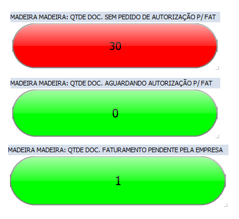
Dúvidas ou Sugestões?
Caso você não esteja logado, faça seu login, acesse a area de Issues e cadastre sua dúvida ou sugestão.